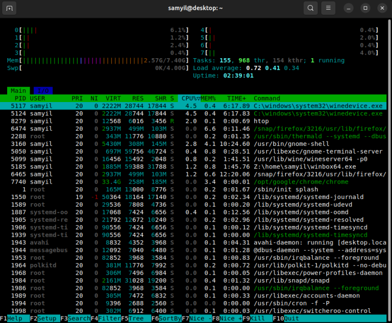

Об образовательной платформе BashTutor

Что такое Bash и почему его полезно изучать?
Bash — это один из самых популярных и распространенных командных интерпретаторов (оболочек) в операционных системах на базе UNIX/Linux и macOS. С его помощью пользователи и системные администраторы взаимодействуют с операционной системой посредством текстовых команд, заменяя привычные графические интерфейсы (GUI) мощными и быстрыми сценариями.
⚙️ Автоматизация рутины
Написание скриптов позволяет автоматизировать однотипные задачи (резервное копирование, обработку файлов, развертывание приложений).
🌐 Работа с серверами
Большинство облачных платформ и веб-серверов управляются через консоль по протоколу SSH без графической оболочки.
💻 Глубокое понимание ОС
Командная строка дает полный контроль над процессами, файловой системой и сетевыми соединениями компьютера.
⚡ Высокая скорость работы
Опытные специалисты могут выполнять сложные операции в терминале в считанные секунды.
О платформе BashTutor
Проект BashTutor был создан как интерактивный, интуитивно понятный справочник и учебное пособие для тех, кто только начинает свой путь в освоении терминала Linux. Основная задача платформы — избавить новичков от необходимости штудировать громоздкие мануалы и предоставить структурированную информацию в удобном виде.
На сайте реализованы следующие разделы:
📚 Каталог команд
Полный список основных команд, разбитых по категориям (файлы, текст, права, процессы, сеть) с возможностью быстрого поиска.
🗺️ Roadmap (Дорожная карта)
Интерактивная блок-схема (на базе Mermaid.js), подсказывающая логическую последовательность изучения тем.
📄 Подробная документация
Отдельные страницы для каждой команды с
синтаксисом, примерами кода в тегах <code> и боковой
навигацией.
💬 Обратная связь
Интерактивное модальное окно с формой для предложений по дополнению справочника новыми материалами.
Об авторе
Проект разработан в рамках учебной программы по дисциплине «Фронтенд и бэкенд разработка» (контрольная работа по использованию CSS-фреймворков и адаптивных интерфейсов).
Автор проекта уделил особое внимание отзывчивости интерфейса, семантической верстке с использованием фреймворка Bootstrap 5, а также удобству пользовательского опыта при изучении технической документации.